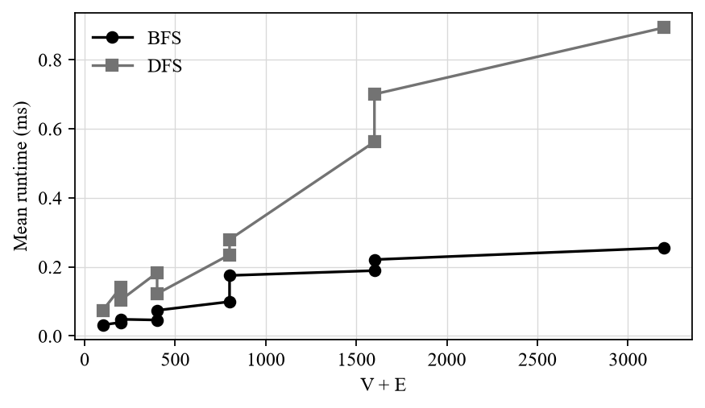
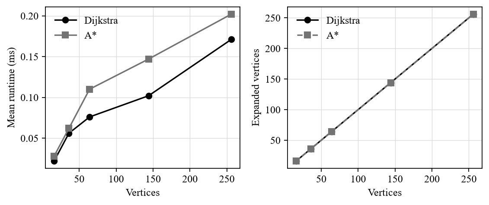
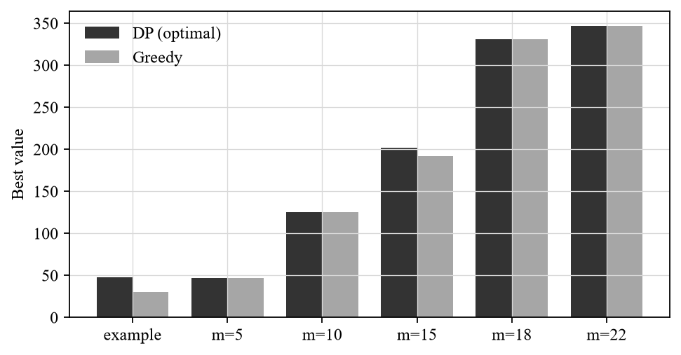
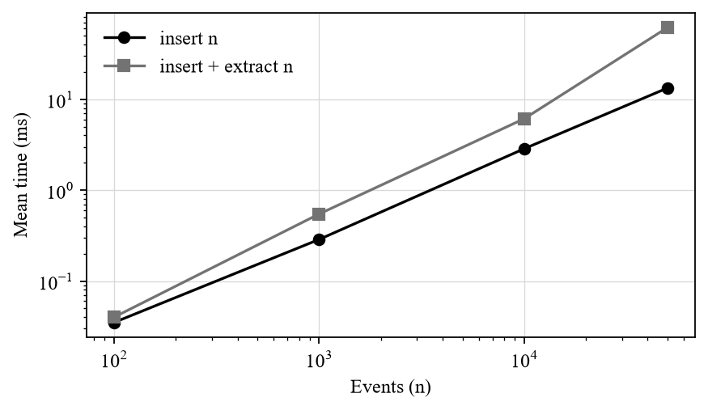
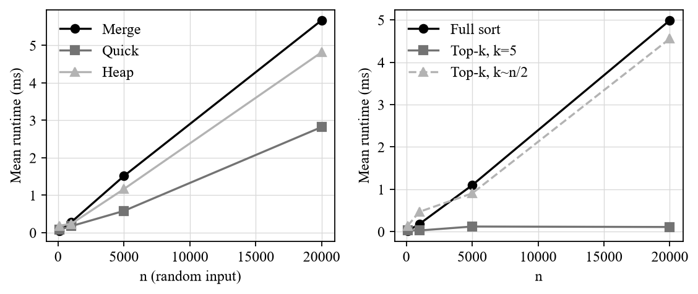

Smart Racing Championship is a two-dimensional, top-down racing game that we built to put a set of classic algorithms to work inside a system that actually uses their results. The brief for the project was explicit on this point: the game is the vehicle, but the assessment is about correct problem modelling, sound algorithm implementation, honest complexity analysis, and measurable results. We have tried to keep that priority visible throughout. Every algorithm the course required has a job in the running game, and the same function that the game calls is also the one the visualisation screen steps through and the one our experiments time.
The game models a racing circuit as a graph. Intersections, checkpoints, the start and finish, fuel stations and nitro pickups are vertices; the roads between them are edges with a length, an expected travel time, a fuel cost, a difficulty rating and a status. A human player races against three deterministic computer opponents over three different circuits. Before and during a race the player plans routes, decides whether a shortcut is worth its fuel and difficulty, chooses when to refuel and when to spend nitro, and reacts to events such as road closures and oil spills that change the graph while the race is in progress. After each race the standings are recomputed and points are awarded; after the final race a champion is declared.
Underneath this, the project is a catalogue of twelve algorithm families. Breadth-first and depth-first search answer questions about reachability, cycles and dead ends. Dijkstra and A* find optimal routes under a weighted cost. Dynamic programming and a greedy heuristic make resource decisions. Backtracking places obstacles during track generation, and a minimum spanning tree gives each generated track a connected backbone. A binary heap schedules race events and retrieves the top racers, and three different sorting algorithms rank the championship. The remainder of this report describes how each of these is designed, where it is invoked in the game, how we tested it, and what our measurements show.
The deliverables are an executable game and its source, an integrated algorithm visualisation, this report, and the raw results of five experimental studies. The code is written in TypeScript and runs in the browser; the simulation core is deterministic and has no dependence on the renderer, which let us test the whole game headlessly. At the time of writing the automated test suite contains 270 tests, all passing.
The code is organised so that the part that can be reasoned about and tested in isolation never depends on the part that draws pixels. We enforced this as a rule rather than a convention: a test in the suite scans the source and fails the build if anything under core, algorithms or engine imports from the user interface or the renderer. The practical benefit is that the entire simulation, from a single Dijkstra call to a complete four-car race, runs under the test runner with no browser present.
| Layer | Responsibility |
|---|---|
core | Data types, the Graph class, the seeded random number generator, the cost model, the binary heap, union-find, and the instrumentation objects used to count operations and record steps. |
algorithms | The twelve algorithm families as pure functions: BFS, DFS, Dijkstra, A*, the 0/1 knapsack and refuelling DP, the greedy heuristic, backtracking track generation, Kruskal's MST, and merge, quick and heap sort. |
engine | The deterministic race engine, the event scheduler, the effect layer, the opponent behaviours, the fuel and nitro rules, the championship comparator and the circuit validator. |
render, render3d, ui, state | The 2D fallback renderer, the 3D renderer, the five screens, and the application state machine. |
experiments | The timing harness and the five experimental studies, runnable from the command line. |
Table 2.1: Top-level source layout.
The game presents five screens, reachable from a main menu. The Track Explorer lets the player pick a start and goal on a circuit and watch BFS, DFS, Dijkstra or A* explore it under any of four cost presets, then race the resulting plan. The Racing screen runs the live four-car race with a heads-up display for fuel, nitro, lap and checkpoint progress. The Championship screen aggregates race results into standings and shows a podium. The Algorithm Lab steps through all twelve algorithm families on the current circuit. The main menu ties these together and exposes settings.
A race proceeds in fixed time steps. On each step the engine advances its clock, applies any events whose trigger time has arrived, and then moves every car by one time increment. The renderer reads an immutable snapshot of this state and interpolates between snapshots for smoothness; it never writes back into the simulation. Because the step size is fixed and the only source of randomness is a seeded generator, a race is reproducible: the same circuit, the same starting grid and the same event schedule always produce the same result, which is both a requirement for fair computer opponents and the property that makes our experiments repeatable.
The planning, racing and review phases map onto the algorithm families directly. In planning, BFS and DFS establish what is reachable and where the cycles and dead ends are, and Dijkstra or A* compare candidate routes under the chosen preset. During the race, a minimum heap fires scheduled events in order, the graph is updated, and routes are recomputed from the car's current position without restarting. Resource decisions, which pickups to collect and where to refuel, are made by the dynamic programming and greedy planners. In review, the three sorts and the top-k heap produce the standings and the podium.
Each circuit is a graph G = (V, E) stored as an adjacency list, which uses O(V + E) memory and iterates a vertex's neighbours in time proportional to its degree. For the sparse road networks we deal with this is far more suitable than an adjacency matrix, which would cost O(V²) regardless of how few roads exist. A vertex carries an identifier, map coordinates (used by the A* heuristic), a type (start, finish, checkpoint, intersection, fuel station, nitro pickup or dead end), the required order if it is a mandatory checkpoint, and a flag for whether a service vertex is currently active. An edge carries its endpoints, a non-negative distance, base travel time and fuel cost, an integer difficulty from one to five, a status of open, blocked or restricted, and flags for whether it is a shortcut and whether it is one-way.
Dynamic changes during a race, blocking and unblocking a road or activating and deactivating a station, modify the relevant object in place; the adjacency list holds references to the same edge objects, so a change is visible everywhere at once without rebuilding the graph. Blocked edges are excluded from route searches by the neighbour iterator. A restricted edge remains traversable but its effective travel time is divided by a speed cap of 0.5, so routing sees the higher cost. Overlapping temporary effects on an edge are stored independently, each with its own expiry, and the effective state of the edge is recomputed from all of them in a documented order so that one effect expiring never removes another that is still active.
Routing needs a single non-negative number per edge so that Dijkstra is applicable. We combine five criteria into one scalar:
cost(e) = wD·D(e) + wT·T(e) + wF·F(e) + wR·R(e) + wO·O(e)
Here D, T, F, R and O are the distance, travel time, fuel use, difficulty penalty and obstacle penalty of the edge. These quantities are measured in different units and ranges, so before they are combined each is divided by a documented reference value to bring it into a comparable scale. We use a hybrid rule. Difficulty and the obstacle penalty are bounded by design on a 0 to 5 scale, so they are divided by 5. Distance, time and fuel have no natural ceiling, so their references are taken from the largest values that occur across the three championship circuits and then rounded up for headroom. The frozen references are a distance of 600, a time of 20 and a fuel of 30, with difficulty and obstacle at 5. Under these references every normalized term lies in the unit interval, which is what makes a weight meaningful: a weight of one-half means the same “half of the worst case” for fuel as it does for distance.
Four presets express different driving policies by changing the weights only. Balanced weights every criterion at 0.2. Speed raises the time weight to 0.5 and lowers fuel to 0.1. Economy raises fuel to 0.5. Safety raises difficulty to 0.4 and obstacle to 0.3. On a circuit that offers a short but hard shortcut against a longer but easy main road, these presets diverge: Speed and Economy take the shortcut while Safety routes around it. The number the Track Explorer shows the player is exactly the value the routing algorithm minimised; the display and the optimisation use the same function, so they cannot drift apart. The weakness of folding several objectives into one scalar is that a single run only ever returns the optimum for one fixed preference vector and cannot show the whole trade-off surface. We treat that as the known limitation of the approach, and we keep fuel, time and nitro as genuinely separate resources in the resource planner rather than pretending the scalar makes them interchangeable.
| Parameter | Value | Rule |
|---|---|---|
| Maximum fuel | 100 units | Full tank at the start. |
| Fuel per edge | fuelCost × (1 + 0.1 × (difficulty − 1)) | Harder roads cost more. |
| Fuel station | Up to 40 units per stop | A fixed 3-second stop applies to any positive purchase. |
| Maximum nitro | 3 charges | Collected from active pickups; capacity cannot be exceeded. |
| Nitro effect | 1.5× speed for 4 seconds | One charge per activation. |
| Nitro fuel penalty | 2× fuel while active | Applied to the affected portion of the road. |
Table 3.1: Frozen fuel and nitro values, identical for the player and the opponents.
The dynamic programming for fuel needs discrete states, so fuel is represented internally as integer tenths of a unit. A full tank is 1000 units of state, a 40-unit purchase is 400. Working in tenths keeps the state space finite and bounded while still giving the planner enough resolution to make sensible buying decisions. The same rules apply to every racer; they are frozen before any measurement is taken.
The three computer opponents behave identically given the same track, event sequence and starting conditions. One follows a fixed main route and takes a documented detour when it is blocked; one prefers a designated shortcut whenever it is open and legal and falls back to the main route otherwise; one always takes the route of least weighted cost and recomputes it when a road closes. All of them obey checkpoint order, fuel limits and road boundaries, and all refuel at the first eligible station once they drop below a quarter of a tank. If no valid route exists, the same recovery policy applies to every car: reroute if possible, otherwise the car is recorded as not finishing rather than freezing the race. Finishing order is by time, with the lower racer identifier breaking an exact tie. Championship points follow the standard table of 25, 18, 15, 12, 10, 8, 6, 4, 2 and 1 for the first ten positions, and the full tie-break order used by every ranking method is described in Section 4.9.
This section describes each of the twelve algorithm families: its role, the data structures it uses, the reasoning for why it is correct, and its complexity. Every one of these is implemented once, and that single implementation accepts an optional trace object. Gameplay passes nothing and pays no overhead; the Algorithm Lab passes a recording trace to animate the steps; the experiments pass a counting trace to tally operations. This is how we avoid a detached demonstration: the Lab and the experiments observe the very same code the game runs.
BFS answers reachability and finds a path with the fewest roads on an unweighted view of the graph. It uses a FIFO queue, a visited set and a parent map. Starting from the source it settles vertices in order of increasing edge distance, so the first time it reaches a vertex it has done so along a path of minimum edge count, and the parent map lets us reconstruct that path. It is important to state what BFS does not do: it does not minimise distance, time or weighted cost. On a graph where a single road of length ten connects the start to the goal while a three-edge detour of total length six also connects them, BFS returns the single road because it has the fewest edges, even though the detour is shorter. Correct route cost is the job of Dijkstra, not BFS.
BFS(G, s, goal):
mark s visited; parent[s] = null; dist[s] = 0; enqueue s
while queue not empty:
u = dequeue
if u == goal: break
for each (edge, v) in neighbours(u), edge not blocked:
if v not visited:
mark v visited; parent[v] = u; dist[v] = dist[u] + 1; enqueue v
reconstruct path from goal via parent
Time is O(V + E) because each vertex is enqueued once and each edge is examined a constant number of times; auxiliary space is O(V).
DFS supports traversal, cycle detection, connected components and dead-end analysis. It records discovery and finish times and colours each vertex white, grey or black. A grey vertex reached again, along an edge other than the one we arrived on, is a back edge and indicates a cycle; remembering the incoming edge is what lets the same routine work for undirected roads, which would otherwise look like two-vertex cycles. Components are found by continuing the search from every unvisited vertex. A dead end is defined as a non-mandatory vertex from which the finish cannot be reached without reversing; we find these by repeatedly removing non-protected vertices of degree one until only the loops and through-roads remain, which is a standard leaf-pruning argument. A single DFS traversal is O(V + E); enumerating all simple paths, which the alternative-route panel can do, is exponential in the worst case, so we bound it by a documented limit on both the number of paths and their length.
Dijkstra finds the optimal path for non-negative edge costs, which our normalized cost guarantees. It keeps tentative distances in a binary minimum heap and repeatedly settles the cheapest unsettled vertex, relaxing its outgoing edges. We use lazy deletion: instead of decreasing a key in place we push a new entry and ignore any entry whose vertex has already been settled. Because every edge weight is non-negative, once a vertex is removed from the heap its distance is final, which is the standard correctness argument. With a binary heap the running time is O((V + E) log V). Blocked edges are skipped by the neighbour iterator, and the exact scalar it minimises is the value the interface shows.
Dijkstra(G, s, goal, cost):
dist[s] = 0; push (s, 0)
while heap not empty:
(u, d) = pop
if u settled: continue // stale entry
settle u
if u == goal: break
for each (edge, v) in neighbours(u), edge not blocked:
nd = dist[u] + cost(edge)
if nd < dist[v]: dist[v] = nd; parent[v] = u; push (v, nd)
A* is Dijkstra guided toward the goal by a heuristic estimate of the remaining cost. For the heuristic to preserve optimality it must never overestimate. For distance-only routing the straight-line distance between a vertex and the goal is admissible, because an edge is at least as long as the straight line between its endpoints; to stay safe on generated data we multiply it by the largest factor that keeps it a valid lower bound on every road. For the weighted cost we multiply the straight-line distance by the minimum cost-per-distance ratio found over all edges, which is also a valid lower bound. Our heuristic is consistent, so once a vertex is settled it need never be reopened; we provide an opt-in reopening path for the case of an admissible but inconsistent heuristic. A* returns the same optimal cost as Dijkstra whenever these conditions hold. It is worth stating plainly that A* does not always expand fewer vertices; depending on the heuristic, the graph and the tie-breaking it can expand fewer, the same, or more. Our Experiment 2 shows exactly this.
Two problems in the game are dynamic programming problems. The first is a 0/1 knapsack: given a set of optional pickups, each with an integer cost and a benefit, and a budget, choose the subset of greatest total benefit that fits. The recurrence is the textbook one, filling a table over items and budget:
dp[i][b] = dp[i-1][b] if cost_i > b
= max(dp[i-1][b], dp[i-1][b-cost_i] + value_i) otherwise
base: dp[0][b] = 0 for all b
The selected items are recovered by tracing the table from the last cell: an item was taken wherever its row improved on the row above. The table costs O(m·B) time and space, which is pseudo-polynomial in the numeric budget; a one-dimensional variant computes the value alone in O(B) space. In the game this chooses which nitro pickups are worth a short detour under a fuel budget. The second problem is refuelling along a fixed route: with the fuel needed on each leg, the tank capacity and the stations known, the planner decides how much to buy at each station so that the route is completed with the fewest stop-seconds. The state is the fuel on arrival at a stop, discretised in tenths; at a station the planner considers buying any amount up to the lesser of the remaining tank space and the 40-unit cap. A route is feasible if some reachable state arrives at the destination with non-negative fuel.
The greedy planner offers a fast alternative to the knapsack DP. It takes every zero-cost positive-benefit item first, then sorts the rest by benefit-to-cost ratio and takes each while it fits, breaking equal ratios by the lower item identifier. It is a feasible heuristic, not an optimal one. The standard counter-example makes this concrete: with items of cost 6 and benefit 30, and two items each of cost 5 and benefit 24, under a budget of 10 the greedy choice is the single high-ratio item for a benefit of 30, while the DP takes the two cheaper items for 48. Our experiments include this case and two further cases that we constructed where greedy is strictly worse, and we verify the DP against exhaustive search on small instances.
Backtracking generates configurations that satisfy the track constraints. During circuit generation it places obstacles on the ring roads so that no two are adjacent, choosing positions one at a time and undoing a choice when it leads to a dead end. The worst case is exponential, but the adjacency constraint prunes most of the search, and in practice a valid placement is found quickly. The same technique underlies the constraint-based placement of checkpoints and services in the generator.
Each generated circuit starts from a minimum spanning tree over its candidate roads, which guarantees the track is connected before any extra roads are added for cycles, alternative routes and shortcuts. We use Kruskal's algorithm: sort the roads by length and add each road that joins two separate components, using a union-find structure with path compression and union by rank to test and merge components in near-constant amortised time. The running time is dominated by the sort, O(E log E). If the candidate graph were disconnected the result would be a spanning forest rather than one tree, so the generator ensures connectivity first.
A single binary heap underpins several features. It is the priority queue inside Dijkstra and A*. It is the scheduler for race events, keyed by trigger time, then priority, then insertion sequence so that even simultaneous events fire in a fully deterministic order; cancellation is lazy, marking an event and skipping it when it reaches the top, which trades a little memory for a much simpler structure. It is also the engine of top-k retrieval: to find the leading racers we keep a heap of size k and replace its worst element whenever a better one arrives, which costs O(n log k) rather than the O(n log n) of a full sort. Insert, extract and peek on the heap are O(log n), O(log n) and O(1). The heap is a supporting data structure used by several algorithms rather than an algorithm in its own right, and we have kept that distinction in mind throughout.
The championship is ranked by three independent sorts so that their agreement can be checked. Merge sort is the primary ranking: it is O(n log n) in every case, uses O(n) extra space, and is stable, so racers that compare equal keep their order. Quick sort is the alternative: O(n log n) on average and O(n²) in the worst case, implemented with a three-way partition that handles many equal keys well. Heap sort is the third: O(n log n) and in place. All three, and the top-k heap, take the same comparator, which defines a total order over championship entries: more points first, then more wins, then a lower sum of finishing positions, then a lower best lap time, and finally a lower racer identifier. Because the comparator is a total order there are no ambiguous ties, so the three sorts must produce identical rankings and the top-k result must equal the first k of a full sort. Our tests check exactly these equalities.
The project brief is firm that every mandatory algorithm must have a functional role in the real game, and that the visualisation must call the same implementation the game uses. Table 5.1 records, for each algorithm, the source file that implements it and the gameplay sites that call it. The Algorithm Lab imports every one of these functions directly; a test fails the build if the Lab were ever to declare an algorithm of its own.
| Algorithm | Implementation | Where it is invoked in gameplay |
|---|---|---|
| BFS | algorithms/bfs.ts | Reachable-checkpoint report in the Track Explorer; ordered-reachability check in the circuit validator. |
| DFS | algorithms/dfs.ts | Cycle, component and dead-end analysis in the Track Explorer and validator. |
| Dijkstra | algorithms/dijkstra.ts | Per-leg route planning for every car; nearest-station search for refuelling; route recomputation after a closure. |
| A* | algorithms/astar.ts | The human's route when A* is selected, and the A*-router opponent; route preview in the Track Explorer. |
| Knapsack DP | algorithms/knapsack.ts | Choosing which nitro pickups a car collects within a fuel budget (RaceEngine.choosePickups). |
| Greedy | algorithms/greedy.ts | The same pickup choice for the shortcut-seeking and BFS/DFS opponent styles. |
| Refuelling DP | algorithms/fuelPlan.ts | Planning fuel stops along a car's route so it finishes with the fewest stop-seconds. |
| Backtracking | algorithms/generate.ts | Obstacle placement during generation of circuits two and three. |
| Kruskal MST | algorithms/mst.ts | The connected backbone of every generated circuit. |
| Heap / priority queue | core/BinaryHeap.ts, engine/EventScheduler.ts | The frontier in Dijkstra and A*; the race event scheduler; top-k retrieval for the podium. |
| Merge sort | algorithms/sort.ts | Primary championship ranking (buildStandings). |
| Quick sort | algorithms/sort.ts | Alternative ranking offered on the Championship screen. |
| Heap sort | algorithms/sort.ts | Third ranking method on the Championship screen. |
Table 5.1: Each algorithm, its single implementation, and its role in the running game.
Two points are worth drawing out. First, the routing used by the opponents is not a separate copy; the same planCheckpointRoute wrapper runs Dijkstra or A* leg by leg through the mandatory checkpoints in order, for the human and for every opponent, so that no car can skip a checkpoint. Second, the resource planners are genuinely in the loop: a car asks the knapsack or greedy planner which pickups are worth a detour, and the refuelling planner prices the resulting route and schedules stops, so the dynamic programming affects where the cars actually drive and how much fuel they carry.
Our testing has two aims: to show each algorithm is correct on the cases the brief lists, and to protect the properties that hold the system together. The suite has 270 tests and runs in a few seconds. It is split into unit tests for the individual algorithms, engine tests for the race, and a group of specification tests that assert, point by point, the behaviours the brief requires.
| Area | Cases covered |
|---|---|
| Graph | single vertex, disconnected, cyclic, branching, dead-end, directed and undirected. |
| Routing | source equal to target, unreachable target, blocked edge, equal-cost paths, zero-weight edges, and a graph change during the race. |
| Resources | insufficient fuel, full tank, unavailable station, capacity limit, zero-cost pickup and an infeasible plan. |
| Events | simultaneous events, deterministic ties, cancellation, expiry, missing targets and overlapping effects. |
| Sorting | empty, singleton, random, sorted, reverse-sorted and duplicate-heavy inputs under one comparator. |
| Integration | a complete multi-lap race, ordered checkpoints, a not-finished outcome, a mid-race closure and championship standings. |
Table 6.1: Minimum test coverage, mapped to the brief.
Beyond case coverage, a handful of tests encode the rules the whole project depends on. A determinism test runs a full race twice from the same seed and asserts the results are byte-for-byte identical; it fails the moment any uncontrolled randomness or wall-clock time enters the simulation. A comparator-agreement test checks that merge, quick and heap sort produce the same ranking and that top-k equals the first k of a full sort, on many random inputs including one that forces the racer-identifier tie-break. A display test checks that the cost shown for a route equals the cost the algorithm minimised. A guard test checks that the cost model is never bypassed and that no algorithm imports from the user interface. The knapsack DP is checked against exhaustive search on two hundred random instances. Because these invariants are tests rather than comments, they keep holding as the code changes.
Because every bug is reproducible from a seed, our debugging routine was to capture the seed, write a failing test that reproduces the problem, localise it using the layer boundary (a failure in a headless test is in the algorithms or the engine, not the renderer), inspect the recorded trace to see exactly where a search relaxed the wrong edge or the heap popped out of order, fix the root cause, and keep the reproducing test as a regression guard. Two real defects were caught this way and are now covered by tests: a circuit fixture that shared mutable edge objects between builds, and a route planner that could strand a car on a pickup detour until the refuelling planner was made to price the whole route.
We ran five studies. Each generates its inputs from a seed so the datasets are reproducible, warms up and then times at least five runs, and reports the mean. Only the algorithm call is timed; input generation, correctness checks and any printing are outside the timed region. The environment was an Intel Core i7-10610U at 1.80 GHz with 16 GB of memory, running Windows 11 and Node.js 26, with the TypeScript executed single-threaded. The raw comma-separated results are included with the submission. Throughout we are careful to separate the measured runtime from the theoretical complexity; a single timing is never used to infer an order of growth.
We varied the graph from 50 to 800 vertices, at both sparse and dense edge counts, and recorded runtime together with the number of vertices visited and edges examined. The visited and examined counts match the graph size exactly, as they must for a linear traversal. The runtime grows close to linearly in V + E, and the denser graphs are slower at the same vertex count because there are more edges to examine, which is the behaviour O(V + E) predicts.

| V | E | Density | BFS ms | BFS visited | BFS edges | DFS ms |
|---|---|---|---|---|---|---|
| 50 | 50 | sparse | 0.032 | 50 | 100 | 0.074 |
| 100 | 300 | dense | 0.074 | 100 | 600 | 0.122 |
| 200 | 600 | dense | 0.099 | 200 | 1200 | 0.235 |
| 400 | 1200 | dense | 0.189 | 400 | 2400 | 0.562 |
| 800 | 2400 | dense | 0.255 | 800 | 4800 | 0.893 |
Table 7.1: Selected rows from Experiment 1 (full data in the submitted CSV).
We routed from one corner of a square grid to the opposite corner, growing the grid from 16 to 256 vertices, and recorded runtime, expanded vertices, relaxed edges, heap operations and the final cost. A* returned exactly the same optimal cost as Dijkstra on every instance, which is the correctness we wanted to confirm. On these uniform-cost grids A* expanded the same number of vertices as Dijkstra rather than fewer, because when every route to the goal costs the same the straight-line heuristic cannot prune the frontier. This is a legitimate outcome and precisely the point the brief makes: A* is not guaranteed to expand fewer vertices. Its small runtime overhead here comes from evaluating the heuristic without a saving to show for it on this particular family of graphs.

| V | E | Dijkstra ms | Dij. expanded | A* ms | A* expanded | Optimal cost |
|---|---|---|---|---|---|---|
| 16 | 24 | 0.022 | 16 | 0.028 | 16 | 300 |
| 64 | 112 | 0.076 | 64 | 0.110 | 64 | 700 |
| 144 | 264 | 0.102 | 144 | 0.147 | 144 | 1100 |
| 256 | 480 | 0.171 | 256 | 0.202 | 256 | 1500 |
Table 7.2: Experiment 2. Equal optimal cost and, on these grids, equal expansions.
We compared the knapsack DP against the greedy heuristic as the item count and budget grew, and against exhaustive search on the small instances. The supplied example reproduces exactly: the DP finds 48 where greedy finds 30. The two cases we constructed show greedy strictly behind the DP as well; the clearest in this run is the fifteen-item instance, where greedy reaches 192 and the DP reaches the optimal 202. The number of DP states grows with the product of item count and budget, as the pseudo-polynomial bound predicts, climbing from 80 states on the five-item case to 2662 on the twenty-two-item case. Every DP value equalled the exhaustive optimum on the instances small enough to check.

| Case | Items | Budget | DP value | Greedy value | DP states |
|---|---|---|---|---|---|
| example | 3 | 10 | 48 | 30 | 33 |
| m=10 | 10 | 30 | 125 | 125 | 310 |
| m=15 | 15 | 50 | 202 | 192 | 765 |
| m=22 | 22 | 120 | 347 | 347 | 2662 |
Table 7.3: Experiment 3. The DP never loses; greedy is strictly worse where the high-ratio item blocks a better pair.
We scheduled from one hundred to fifty thousand events, with many deliberately equal trigger times, and measured the time to insert them and the time to insert and then extract them all in order. We verified that the extraction order matches a sort by trigger time, then priority, then insertion sequence, so ties are resolved deterministically. The timings grow a little faster than linearly, consistent with the logarithmic cost of each heap operation: inserting and draining fifty thousand events took about 62 milliseconds in total.

We compared merge, quick and heap sort on random, sorted, reverse-sorted and duplicate-heavy inputs from one hundred to twenty thousand elements, and then compared a full sort against size-k top-k retrieval. On random input quick sort was fastest and heap sort slowest, with merge sort between them, which matches the usual picture of cache behaviour and constant factors. Quick sort's three-way partition shone on duplicate-heavy input, where it finished several times faster than the others. The top-k comparison shows the expected crossover: when k is small, retrieving the top five with a size-k heap is far cheaper than a full sort and stays almost flat as n grows, but when k approaches n the heap does as much work as a sort and the advantage disappears. For twenty thousand elements the top five took about 0.1 milliseconds against 5 milliseconds for a full sort, while retrieving ten thousand took about as long as sorting.

| n | Merge ms | Quick ms | Heap ms | Top-5 ms | Full sort ms |
|---|---|---|---|---|---|
| 1000 | 0.280 | 0.174 | 0.235 | 0.027 | 0.181 |
| 5000 | 1.513 | 0.581 | 1.165 | 0.120 | 1.097 |
| 20000 | 5.672 | 2.820 | 4.818 | 0.109 | 4.992 |
Table 7.4: Experiment 5 on random input. Quick sort leads; top-k with small k stays nearly constant.
The movement model is deliberately simple. A car traverses one road at a time and the road's time and fuel are charged when it completes, rather than being integrated continuously; refuelling is a timed pause at a station. These choices keep the simulation deterministic and easy to reason about, at the cost of some physical realism. The single weighted cost, as discussed in Section 3.2, cannot express the full set of trade-offs between objectives, only the optimum for one preference vector at a time. The computer opponents do not spend nitro offensively. None of these affect the correctness of the algorithms or the fairness of the race; they are modelling simplifications that we have stated rather than hidden.
We completed all three advanced challenges. For automatic track generation, the generator builds a minimum spanning tree backbone, adds roads for cycles and shortcuts, and uses backtracking to place checkpoints, services and obstacles under spacing constraints; a validator then rejects any candidate that is not playable, and our tests include an invalid candidate that is correctly rejected because a checkpoint is unreachable. For multi-objective route planning, the four presets produce different routes on the same circuit, and we have discussed the limitation of combining objectives into one scalar. For live championship analytics, the top-k heap retrieves the leading racers more cheaply than a full sort when k is small, and Experiment 5 quantifies the crossover as k approaches n.
The clearest improvements would be a continuous movement model with acceleration and cornering, opponents that use nitro tactically near overtakes, and a true multi-objective route view that presents the Pareto-optimal set rather than a single weighted optimum. The track generator could also be extended to add one-way roads after the backbone and re-validate directed reachability, which would widen the space of circuits it can produce.
We set out to build a racing game in which the algorithms are not decoration but the mechanism that runs it, and to analyse them honestly. The twelve required families are each implemented once and called from the running game, the visualisation steps through the same code, and the experiments time it. The measurements line up with the theory where the theory makes a prediction, and where they do not, as with A* on uniform grids, the report says so and explains why. The simulation is deterministic, the test suite is green at 270 tests, and the three advanced challenges are complete. The result is a game that is enjoyable to play and, we hope, a clear demonstration that we understand the algorithms we used and can measure them.
The project uses the following third-party libraries and assets, with our thanks to their authors:
The build and test toolchain uses Vite, Vitest, TypeScript and ESLint. The algorithm designs follow the standard treatments taught in the course and found in Cormen, Leiserson, Rivest and Stein, Introduction to Algorithms. All game logic and the implementations of the twelve algorithm families are our own work.
Both members contributed throughout and each understands the complete implementation. Primary ownership was divided as follows.
| Member | Primary areas |
|---|---|
| Shahzad Ahmad (24I-3090) | Graph search (BFS, DFS), shortest paths (Dijkstra, A*), Kruskal's MST and backtracking generation; the graph, cost model and union-find; the circuit validator and circuit data; experiments one and two; the three-dimensional stage, track, car and race views, and the main menu, track explorer and racing screens. |
| Muhammad Ali (24I-3158) | Dynamic programming (knapsack and refuelling), the greedy heuristic and the three sorts; the race engine, event scheduler, effect layer, championship comparator and rules; the binary heap, instrumentation and random number generator; experiments three to five and the timing harness; the two-dimensional renderer, the dashboard and the Algorithm Lab. |
Table A.1: Primary ownership. Both members reviewed and understand the whole system.
The project requires Node.js 20 or later. From the project directory:
npm install install dependencies npm run dev start the game at http://localhost:5173 npm test run the full test suite (270 tests) npm run build type-check and produce a production build npm run experiments regenerate the raw experiment results
The game opens on the main menu. From there the Track Explorer, a quick race, the championship and the Algorithm Lab are all reachable. In the Track Explorer, choosing a start and goal and pressing Run animates the selected algorithm on the circuit; pressing “Race this plan” starts a race along it. During a race, the N key fires nitro, the C key cycles the camera and P pauses. If the browser cannot use three-dimensional graphics, the game falls back automatically to an equivalent two-dimensional renderer; the simulation and its results are identical in both.